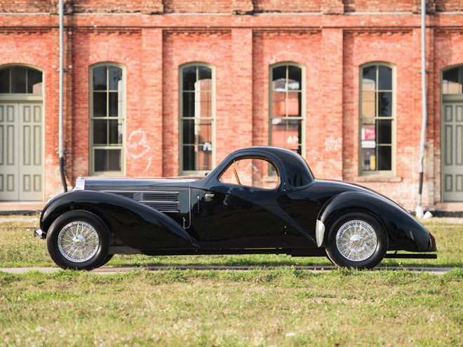
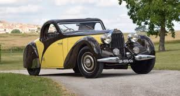
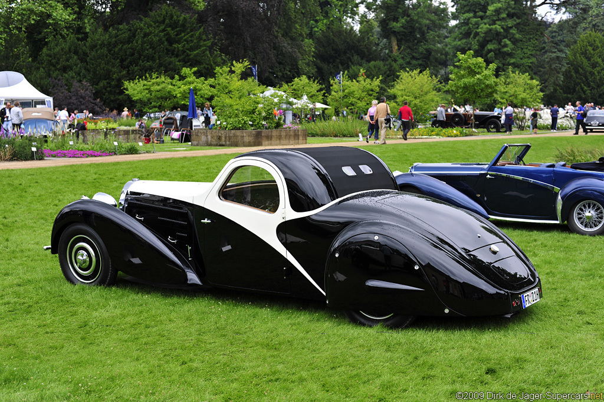
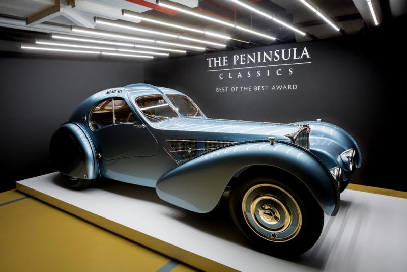
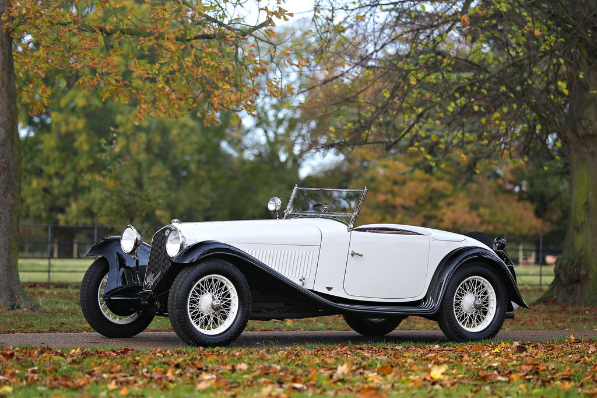

5 siêu xe Bugatti đồ cổ đắt nhất thế giới
Được thành lập bởi Ettore Bugatti từ 1909, Bugatti là thương hiệu xe sang mang tính biểu tượng của Pháp. Năm 1947, sau cái chết của Ettore Bugatti, thương hiệu này dần đi vào ngõ cụt. Cho đến khi dừng sản xuất, chỉ có 8.000 chiếc Bugatti được sản xuất. Năm 2008, tập đoàn Volkswagen của Đức đã mua lại thương hiệu này và làm sống dậy tên tuổi Bugatti. Giờ đây, Bugatti gắn liền với những mẫu xe nhanh nhất thế giới. Chủ sở hữu của nó đều thuộc giới siêu giàu.

1. Bugatti Type 57S đời 1937
Chiếc Bugatti Type 57S đời 1937 phủ bụi trong garage 48 năm, sau đó được bán đấu giá 3 triệu bảng. Những người sở hữu cũng bất ngờ với giá trị thực của chiếc xe.

2.Bugatti Type 57 1935
Những chiếc Type 57 đã sử dụng động cơ cam đôi 3.257cc dựa trên động cơ của Type 49 nhưng được sửa đổi rất nhiều bởi Jean Bugatti, không giống như các động cơ cam đơn của Type 49 và các mẫu trước đó. [3] Các động cơ của Type 50 , 51 sử dụng bánh răng côn ở phía trước động cơ để truyền sức mạnh từ trục khuỷu , trong khi Type 57 sử dụng một bánh răng kích thích ở phía sau động cơ, với bánh răng bằng sợi trên trục cam để đạt được sự im lặng hơn trong hoạt động.

3. 1935 Bugatti Type 57 Atalante
Giống như nhiều khung gầm Type 57SC, # 57563 có thân máy độc đáo. Đó là Philippe Levy, một doanh nhân dệt may thành công, người đã đặt hàng Gangloff để làm cho cơ thể và nội thất của mình. Kết quả rất giống với những gì một Atalante hàng đầu có thể trông giống như vậy.Đến năm 1949, chiếc xe đã vào Hoa Kỳ, khiến nó trở thành một trong những chiếc 57SC đầu tiên làm như vậy. Con bọ đã đổi tay một vài lần trước khi hạ cánh xuống tay của Ralph Lauren vào năm 1986. Ralph ủy quyền cho Paul Russel thực hiện một cuộc phục hồi rộng rãi cho chiếc xe bao gồm thay đổi màu thành màu đen mặc dù có màu nguyên bản của mận.Chiếc xe này là một trong ba chiếc Gangloff Cabriolets được chế tạo cho khung gầm Type 57.

4. Xế cổ Bugatti Type 35 1925
Xe được mua mới bởi Wallis C. Bird thuộc Công ty dầu khổng lồ của Mỹ American Standard Oil, người này đã lái chiếc Type 35 đi khá nhiều trên bờ biển phía Đông của Mỹ. Xe vẫn nằm trong bộ sưu tập của ông này cho đến khi ông chết trong một tai nạn hàng không năm 1961, sau đó chiếc xe được chuyển cho vợ ông. Chiếc xe đã được bán đi cùng với phần còn lại của bộ sưu tập xe lớn trong một sự kiện được mệnh danh là “Cuộc đấu giá thế kỷ”. Bộ sưu tập đã được mua bởi nhà sưu tầm nổi tiếng Henry Austin Clark, chủ nhân hiện tại của chiếc Bugatti Type 35 đã mua lại nó từ tay nhà sưu tầm này 35 năm trước.Được bảo quản trong điều kiện nguyên vẹn và rực rỡ trong màu French Racing Blue, Type 35 có giá trị ước tính khoảng ba triệu USD (~68 tỷ VNĐ) nếu được mang tới đấu giá trong sự kiện từ ngày 20-21 tháng Một, năm 2017.

5. Bugatti Bentley 4 ½ Litre Open
chiếc Bentley 4 ½ Litre Open Tourer được sản xuất bởi Vanden Plas có màu xanh lục cực tối British Racing Green – giống với chiếc xe từng vô địch giải đua Le Mans năm 1928, ước tính xe có giá lên tới 1,1 triệu đô (25 tỷ VNĐ).Cùng với chiếc Bugatti này là một chiếc Alfa Romeo 6C 1750 Series V Grand Sport Cabriolet 1932 với phần thân xe Figoni từng thuộc sở hữu của Pierre Louis-Dreyfus. Xe mới được phục hồi lại gần đây và chưa ra mắt công chúng, ước tính chiếc Alfa trị giá 2,5 triệu đô (56 tỷ 662 triệu VNĐ).